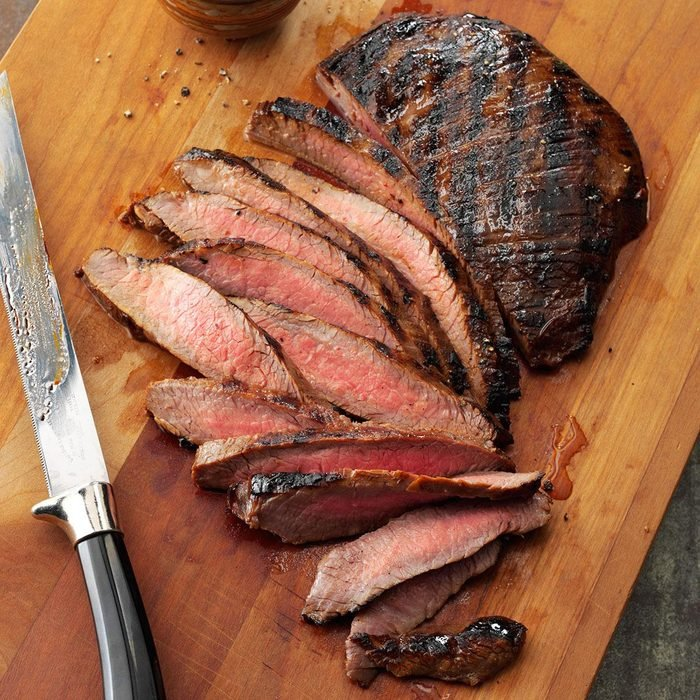

Grilled Tender Flank Steak

Description
How to cook flank steak? Easy! Marinate it and grill or broil it! This marinated steak is so moist that it will become one of your favorite ways to serve beef. —Heather Ahrens, Columbus, Ohio
Ingredients
- 1 cup reduced-sodium soy sauce
- 1/4 cup lemon juice
- 1/4 cup honey
- 6 garlic cloves, minced
- 1 beef flank steak (1-1/2 pounds)
Steps
- In a large shallow bowl, combine the soy sauce, lemon juice, honey and garlic; add steak. Turn to coat; cover and refrigerate for 6-8 hours.
- Drain and discard marinade. Broil 4-6 in. from the heat or grill over medium heat until meat reaches desired doneness, 8-10 minutes on each side (for medium-rare, a thermometer should read 135°; medium, 140°; medium-well, 145°). Thinly slice steak across the grain.
Home